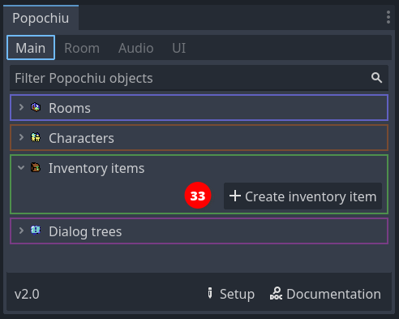
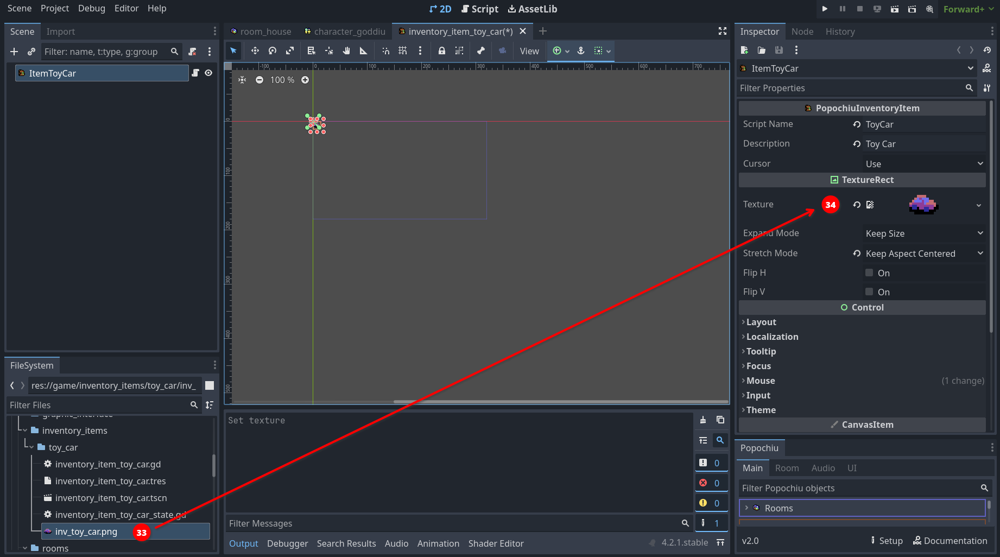

Add an inventory item
The inventory is where your player will collect all items that will be useful to progress in your game.
In Popochiu, inventory items are global objects, like rooms or characters. They have a script, to hold all the game logic related to them, and a texture, so that they can be rendered somewhere in the GUI.
To create a new inventory item click on the Create Inventory Item button in the tab room of the Popochiu dock (32), and name the new item in the popup window that appears.

We'll name our new inventory item "ToyCar", because we are going to make the prop we just created collectible. Go on and click OK. Popochiu will open the new inventory item's scene in the editor.
Inventory items are very simple. They have no interaction polygons or similar because representing them in an interactive grid of sorts is the responsibility of the GUI.
The only thing we need to do is to assign a texture to them, that will be painted in the inventory GUI by Popochiu.
If you don't have a sprite ready for your inventory item, you can download this one from the demo game.
{kind=link}
Save it into your project, in the game/inventory_items/<your inventory item name>/inv_toy_car.png folder, and rename it as you see fit.
Assigning the texture to the inventory item is done the same as props, by dragging the image from the FileSystem to the Texture property in the inspector (33).

That's it. Your inventory item is configured and it is now possible to add it to the main character's inventory.
We are going to script this part by interacting with the toy car prop we placed in our room.
Go back to the room scene (you can press the Open in Editor button on the "House" room row in Popochiu's main dock) and use the room tab to open the "ToyCar" prop script.
If you've followed along, you will see that we just scripted the examine interaction for it, implementing the _on_right_click() function. It's now time to write an _on_click() function that allows us to pick the prop up and add it to the inventory.
# When the node is clicked
func _on_click() -> void:
await C.player.walk_to_clicked()
await C.player.face_clicked()
await C.player.say("Better picking them up, before I trip over it!")
R.get_prop("ToyCar").hide()
I.ToyCar.add()
Save the project and run the game. Now if you click on the toy car on the floor, the main character will say its line, and then the item will disappear from the scene and appear in the inventory.
Warning
It's worth clarifying a couple of things that may be misleading.
- The fact that the inventory item exists in Popochiu catalog does not mean it is automatically available in the character's inventory: quite the opposite, we want to create many inventory items that the character will collect as the player makes progress throughout the game.
- If you paid attention to the code, you should have noticed that there is no connection between the ToyCar prop and the ToyCar inventory item. Since they represent the same object in the game world, they have the same name and a very similar texture. This makes sense to us as human beings, but for Popochiu the two objects are completely unrelated.
Indeed, our script is telling the engine to hide a prop that's in the room, and then to add an inventory item to the character's inventory. The prop is still there, just disabled.
But why not just have a "collectible" prop? Well, the reason is that, although the most common way to collect objects is "picking them up", there are so many other ways. You may want to add an item to the inventory when the character opens a drawer (implying that he found something in there), or maybe during a dialog with another character (implying that it has been given by someone for a reason). Or maybe you just want the character to win loot after a successful action.
Popochiu does not force a specific game structure on you. Of course, it provides sensible defaults for the staples of the genre, but it gives you the tools to build the adventure you want to build.
Tip
Despite what we just said Popochiu does provide a way to automatically hide a prop when it's collected. Populate the Link to item property in the inspector with the name of the inventory item that corresponds to that prop. When the item is added to the character's inventory, the engine will remove the corresponding prop from the stage for you.
Magic!
Note
See how the last two lines of the _on_click() function are not await-ed? The reason is that those functions are just changing the state of the game, without triggering animations, or dialogs.
To learn if a function must be awaited, the best option is to check in the API reference section. As a rule of thumb, if the function "is not making something happen on the screen as it was in a movie" (animating, moving stuff around, printing text... everything that needs time to be seen), then it probably doesn't need to be awaited.
Note
The default Popochiu GUI Templates have different inventory icon sizes. Images will be scaled to fit into the inventory slot. As a general rule it's better to scale a larger image down to a smaller one to avoid having unwanted artifacts in the image.
2-Click Context-Sensitive: has an inventory icon size of 16x16 pixels. Sierra: has an inventory icon size of 24x24 pixels. 9 Verb (LucasArts): has an inventory icon size of 40x24 pixels.